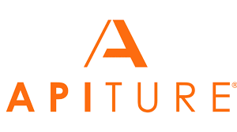

During my internship at Apiture, I worked on an internal auditing tool to track changes within the platform.
This project required me to dive into legacy Perl code, navigate field spaces, integrate CGI and HTML formatting,
and manage data using SQL queries.
This was my first time working in a professional development environment. I became familiar with tools like Bitbucket
and Jira for course control and task tracking. I faced a steep learning curve, but with the help of my mentor,
I was able to adapt quickly.
Key Outcomes
- Gained experience with real-world codebases
- Improved my debugging and problem-solving skills
- Learned to use internal tools like watchlog and warn statements
- Built confidence in navigating unfamiliar code
- Became familiar with pair programming and asking questions in the work space

Tools Used
- Perl
- SQL
- Bitbucket
- Jira
- MicPerl
- HTML
- CGI